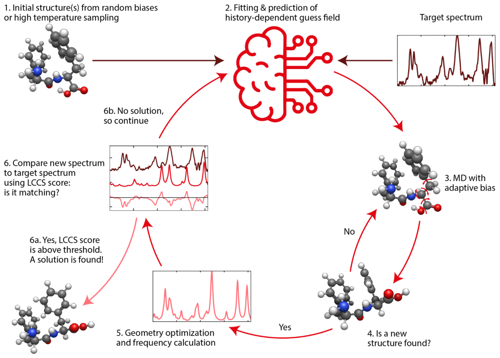
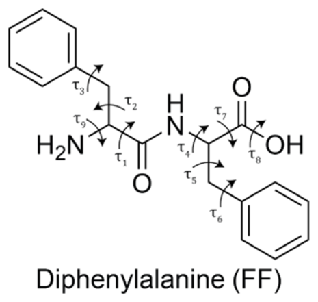
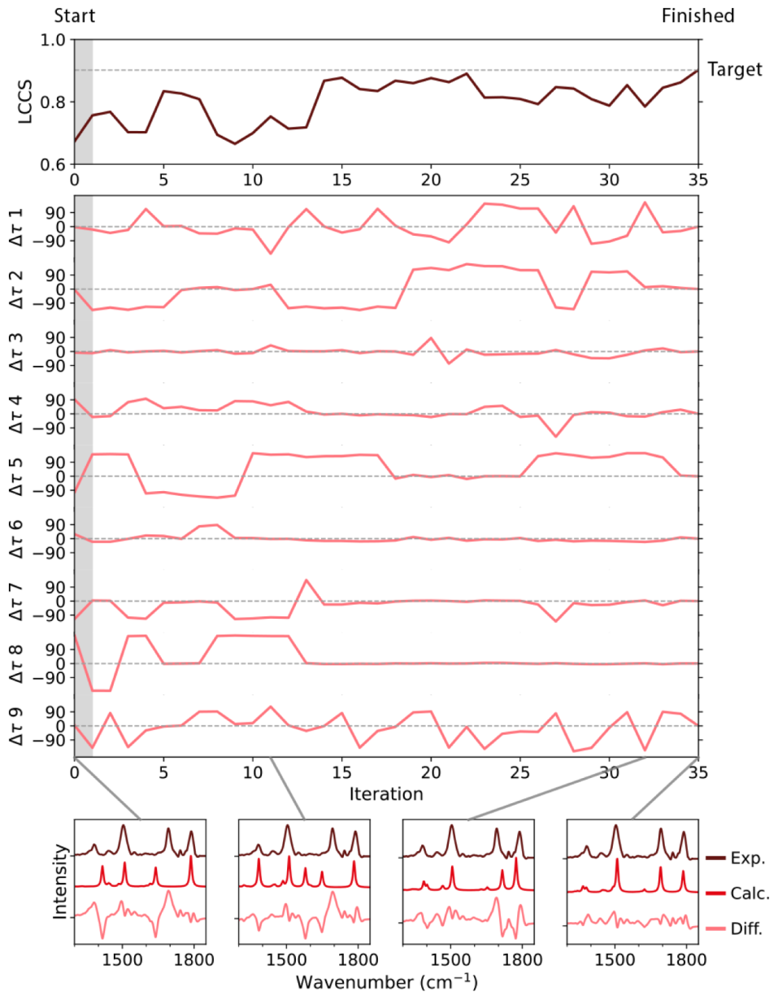
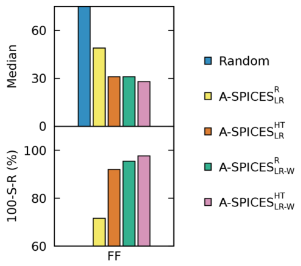
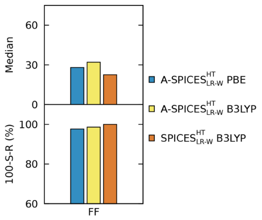
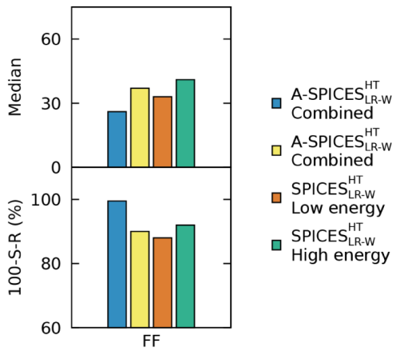

SPICES：让目标光谱决定下一步搜索哪个分子构象
论文原文 ↗原文：Roel van de Ven、Herma Cuppen、Daria Ruth Galimberti，SPectroscopy Informed Configurational Enhanced Sampling (SPICES)，Journal of Chemical Theory and Computation，2026。DOI：10.1021/acs.jctc.6c01326。
测到一条红外光谱以后，怎样判断分子采用了哪一种三维构象？通常先搜索许多稳定构象，再逐个计算振动光谱，与实验比较。困难在于，便宜的方法可以找到数百个候选，而高精度光谱计算仍然昂贵。若仅计算低能构象，又可能把动力学俘获的高能结构排除在外。
SPICES 将目标光谱直接用于搜索决策：根据已经计算过的少量“结构—光谱”对应关系，估计结构该朝哪里改变，再用带偏置的分子动力学寻找新构象。 每得到一个新构象，就计算它的光谱，更新下一轮的搜索方向。作者以气相二苯丙氨酸为例，展示了从超过 400 个稳定构象中，以少量昂贵光谱计算找到实验所对应结构的过程。
从一条光谱出发，怎样产生下一步结构变化

图1｜原图1。目标光谱与已知结构—光谱配对共同决定搜索方向；新构象通过优化和光谱计算后，匹配成功则结束，否则加入历史数据继续搜索。
用结构坐标和光谱向量描述同一个构象
作者选择的测试分子二苯丙氨酸（FF）具有多个可旋转键。它们的转动会改变分子内部的氢键、基团相对位置和振动频率。研究用九个二面角组成结构向量 \(Q\)：每个二面角描述围绕某条键的相对扭转。

图2｜原图2。箭头标出描述 FF 构象变化的九个扭转角。
光谱则写成向量 \(I\)，各分量是不同波数处的强度。为了用少量数据拟合，程序先把谱线划入固定宽度的区间、积分各区间强度，再标准化并进行主成分分析（PCA）。PCA 将共同变化的光谱信息压缩成较少的数值特征，保留累计 99% 的数据方差。
这样，每个已计算构象都提供一对信息：它的扭转角 \(Q\)，以及压缩后的光谱 \(I\)。目标是找到与实验目标谱 \(I^*\) 对应的结构。
在线回归给出方向，动力学负责实现结构变化
SPICES 不预先训练一个大规模光谱模型。初始参考可以通过随机偏置产生，也可以先做一次短时间高温采样；在 FF 中，高温初始化采用 600 K、15 ps 的轨迹，发现若干稳定构象后计算其光谱。
接着，程序用当前已有的结构—光谱配对，拟合一个从光谱特征到结构坐标的线性关系。给定目标谱，回归产生一个估计目标坐标；减去当前位置，得到建议位移：
\[ s_n=B_n^T\widetilde I^*-Q_n. \]
其中 \(\widetilde I^*\) 包含目标光谱特征和常数项，\(B_n\) 是本轮拟合的系数。作者还采用局部加权版本：与当前构象更接近的参考结构获得更大权重，使简单线性关系更适合描述当前位置附近的变化。
这个位移是搜索方向的估计。程序将其转换成作用于各二面角的自适应偏置势，并进行分子动力学模拟。偏置像棘轮一样抑制向已经走过的方向退回，推动分子朝建议角度变化。若某个角度迟迟达不到目标，就增强对应偏置；达到目标后，再将目标向前移并减小偏置，让其余原子坐标有时间调整。
因此，回归与动力学分工不同：回归利用历史光谱推测有希望的变化，动力学在真实势能面上实现这种变化并找到新的稳定区域。
把昂贵光谱计算留给真正的新构象
MD 搜索使用较低成本的 DFTB3＋色散修正。发现候选后，程序先与历史结构比较，排除已经访问过的构象；通过后先在低成本层级预优化，再用更高层级优化。每一级都检查是否与已知构象重复，只有最终仍属新构象者才计算振动光谱。
作者使用 PBE 或 B3LYP 配合相应基组计算光谱。搜索阶段与光谱阶段可以使用不同理论层级：前者需要合理找到稳定构象区域，后者则需要足够准确地区分候选谱线。
新光谱与目标谱的相似性由 LCCS 度量。它先对强度作对数变换，减少强峰对弱峰的掩盖，再通过展宽后的谱线重叠计算相似性，允许小幅频率偏移，同时保持对明显峰位差异的敏感性。程序还为每个计算谱寻找最合适的频率缩放因子，以处理计算与实验之间的系统偏移。
若相似性超过设定阈值，就接受该构象；否则将新结构和光谱加入参考集，重新拟合，继续下一轮。所需参考数据就是在这个过程中逐步积累的。

图3｜原图3。上方是匹配分数，中间是各二面角相对目标的差值，下方比较实验谱、计算谱及差谱。不同坐标逐步调整后，谱线最终达到接受阈值。
图3提供了一个化学上直观的例子：初始构象的 COOH 与酰胺羰基形成氢键，使约 1,700 cm⁻¹ 附近的羰基峰发生偏移；目标构象没有这条氢键。随着相应扭转角改变，局部氢键环境和谱线一起改变，光谱匹配不断得到修正。
搜索究竟节省了多少光谱计算
先在固定构象库上比较搜索策略
作者先利用包含 404 个 FF 构象的结构与光谱数据，建立一个受控测试：将 MD 替换成库中构象间的跳转，其余回归与搜索逻辑保留，称为 A-SPICES。这样可以集中比较光谱反馈、局部加权和初始化策略对搜索的影响。

图4｜原图4。上方比较找到目标所需独特构象数的中位数，下方比较 100 次候选光谱计算以内的成功率；局部加权与高温初始化结合表现最佳。
在计算光谱作目标的 12,500 次运行中，随机搜索找到目标所需的构象数中位数为 223，100 次以内成功率为 23.1%。简单在线线性回归已将二者改善到 49 和 71.6%；结合局部加权与高温初始化后，中位数降到 28，成功率达到 98%。
这项比较说明，少量已经算出的光谱可以反过来指导下一次搜索，减少对剩余构象的盲目逐个测试。
接入真实MD后，实验谱对应构象用中位22次计算找到

图5｜原图5。比较不同光谱计算层级，以及库中跳转和真实 MD 两种搜索方式。橙色为 B3LYP 光谱配合完整 SPICES 搜索。
最终实验目标来自 FF 的气相 IR–UV ion-dip 光谱：该技术选择单一构象的信号，适合检查构象归属。使用 B3LYP 光谱计算和真实带偏置 MD 的 10 个起始构象测试中，SPICES 找到对应构象所需的独特光谱计算次数中位数为 22，这些运行都在 100 次以内完成。
完整 MD 流程从少量初始化参考出发，边搜索边计算新构象与光谱；404 构象库用于受控策略测试及结果比较。
高能目标也能被光谱信息找到

图6｜原图6。分别比较低能、高能目标及合并结果；完整 SPICES 对两类目标保持相近的搜索效率。
作者进一步用计算谱作为目标，分别选择低能构象和比 PBE 全局最低点高 26.5 kJ/mol 的构象。真实 MD 搜索找到目标的光谱计算次数中位数分别为 33 和 41，100 次以内成功率都在约 90% 左右。
这一比较回应了论文开头的问题：若目标对应的是较高能、可能被常规能量窗口排除的构象，光谱驱动仍能将搜索导向它。势能面提供稳定结构和运动路径，选择下一步搜索方向的主要信息则来自光谱匹配。
新增能力：用实验信号来组织原子构象搜索
SPICES 将光谱反演拆成可持续更新的决策循环：少量结构—光谱配对产生方向，带偏置 MD 寻找新稳定构象，高精度光谱计算检验方向，再将结果加入下一轮。它把主要计算节省放在“少算多少条昂贵光谱”上，并通过高能目标测试展示光谱信息可以引导能量排序以外的搜索。
本文中的在线学习采用线性或局部加权回归，真正关键的是它与物理采样和高精度观测计算的连接方式。对于已有谱图、但很难穷举所有结构的体系，这提供了一个具体的结构搜索思路。
数据：FF 构象与光谱测试集。
原始摘要完整中文翻译
我们提出一种新的增强采样方案，用于从光谱出发获得其对应的构象：光谱信息驱动的构型增强采样（SPectroscopy Informed Configurational Enhanced Sampling，SPICES）方法。SPICES 由具有历史依赖偏置的分子动力学驱动，其中偏置由光谱信息而非能量考量决定。因此，SPICES 的表现对目标构象相对于全局最低能结构的能量差较不敏感。此外，它不需要预训练，也不需要对体系预先有所了解。我们对 SPICES 的表现进行了严格评估，并证明它能够在测试体系二苯丙氨酸（FF）的约 400 个稳定构象中，以 22 次光谱计算的中位数识别出正确构象。我们还表明，SPICES 能够耐受实验光谱中的噪声，以及理论与实验之间的小幅差异。